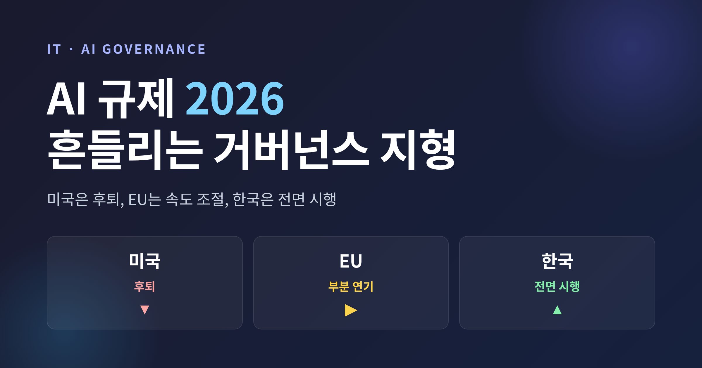
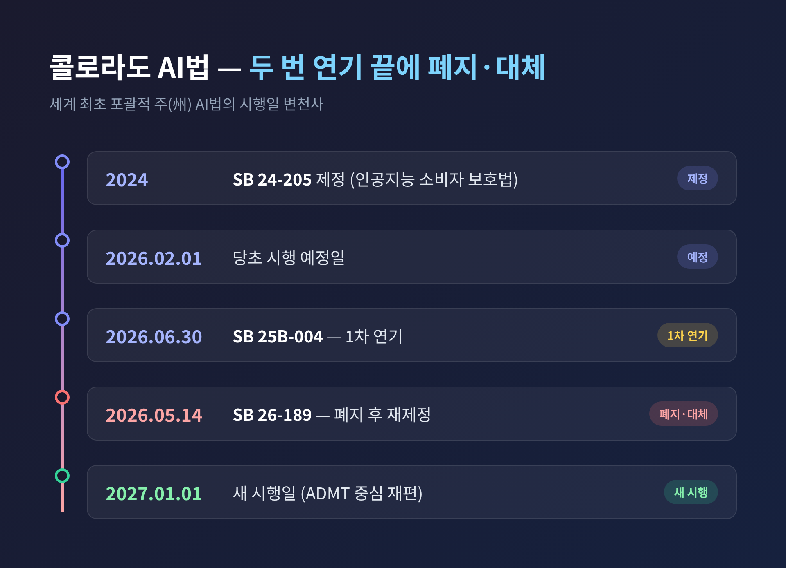
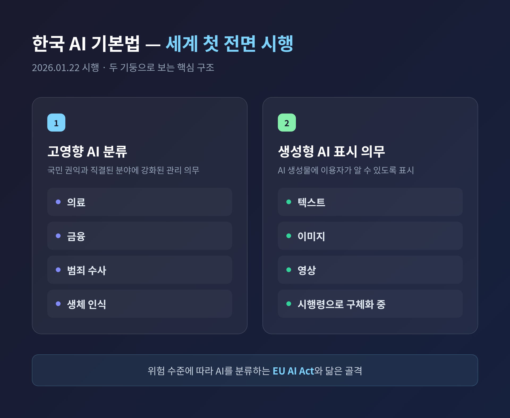

[IT] AI 규제 2026 — 미국·EU는 후퇴, 한국은 시행: 흔들리는 AI 거버넌스 지형

이번 글에서는 2026년 상반기 AI 규제·거버넌스 지형이 어떻게 흔들리고 있는지를 정리해 보겠습니다.
세 줄로 먼저 답을 드리겠습니다.
미국 콜로라도는 세계 최초의 포괄적 주(州) AI법을 폐지·대체하며 시행을 2027년으로 미뤘습니다.
유럽연합(EU)은 규제를 이어가되 일부 데드라인을 연기하는 방향으로 논의 중이고, 한국은 2026년 1월 22일 AI 기본법을 전면 시행하며 정반대 길을 걸었습니다.
규제의 형태가 어떻게 바뀌든, 기업에 남는 숙제는 하나로 모입니다 — "AI 결정을 설명·기록·감사할 수 있어야 한다."
콜로라도 AI법, 두 번 연기 끝에 폐지·대체되다
미국 콜로라도의 AI법(SB 24-205)은 한때 세계의 주목을 받았습니다.
정식 명칭은 「인공지능 소비자 보호법」으로, 미국 최초의 포괄적 주 단위 AI 규제법이었습니다.
고용, 주거, 대출, 교육, 의료 같은 "중대한 결정"에 쓰이는 고위험 AI를 겨냥했고, 알고리즘 차별을 핵심으로 규율했습니다.
당초 시행 예정일은 2026년 2월 1일이었습니다.
그러나 2025년 8월, 주지사 Jared Polis가 SB 25B-004에 서명하며 시행일을 2026년 6월 30일로 한 차례 미뤘습니다.
그리고 2026년 5월 14일, Polis 주지사는 SB 26-189에 서명해 기존 법을 아예 폐지하고 다시 제정했습니다.
새 시행일은 2027년 1월 1일로 또 한 번 밀렸습니다.
예전엔 "예고된 시행"이 화두였습니다.
지금은 "급격한 후퇴와 재편"이 그 자리를 대신합니다.

새 법은 무엇이 빠졌나
새 법(SB 26-189)은 원안의 위험 기반 틀에서 한발 물러섰습니다.
업계가 가장 우려했던 세 가지 의무가 사라졌습니다.
위험 관리 프로그램 의무, 영향 평가 의무, 그리고 차별 방지를 위한 합리적 주의 의무입니다.
다만 모든 것이 사라진 것은 아닙니다.
규율 대상을 "자동화된 의사결정 기술(ADMT)"로 다시 정의하고, 개발자 문서화·배포자 투명성·소비자 권리의 세 축으로 틀을 다시 짰습니다.
2027년 1월 1일부터 개발자는 의도된 용도, 학습 데이터 범주, 알려진 한계, 인간 검토 지침을 담은 기술 문서를 배포자에게 제공해야 합니다.
집행은 주 법무장관이 맡고, 위반 1건당 최대 2만 달러의 제재가 따릅니다.
핵심 의무는 빠졌지만, "AI가 무슨 데이터로 학습되고 어떤 한계가 있는지 설명·기록하라"는 사슬은 그대로 남았습니다.
미국 연방 — 주 규제를 누르려는 흐름
연방 차원의 움직임도 같은 방향을 가리킵니다.
2025년 12월 11일, 트럼프 대통령이 주 단위 AI 규제를 억제하는 행정명령에 서명했습니다.
이어 2026년 3월 20일, 백악관은 "주 AI법의 누더기가 혁신을 가로막는다"는 입장 아래 최소 부담의 단일 연방 프레임워크를 발표했습니다.
다만 이 프레임워크가 실제로 주 규제를 어디까지 선점할 수 있는지는 법조계에서도 논쟁이 있다고 합니다.
아직 완전히 정리된 그림은 아닌 셈입니다.
EU AI Act — 진행은 하되, 일부는 미뤄지는 중
유럽연합은 미국과 다릅니다. 규제를 멈추지 않았습니다.
범용 AI(GPAI) 모델 의무는 이미 2025년 8월 2일 발효됐습니다.
GPT-4, Claude, Gemini 같은 모델 제공자가 현재 준수 대상입니다.
다만 고위험 AI 시스템 의무의 시행일은 자료마다 엇갈립니다.
당초 일정은 2026년 8월 2일 발효였으나, Digital Omnibus 개정 논의를 통해 채용·신용 평가·법 집행 등 일부 시스템의 데드라인을 2027년 12월 2일까지 미루는 방안이 거론되고 있습니다.
이 연기 논의는 2026년 6월 기준 아직 입법 절차가 진행 중이라, 최종 확정 전입니다.
단정하기보다 "연기가 논의되고 있으나 미확정"으로 받아들이는 편이 안전하겠습니다.
제재 수위는 가볍지 않습니다.
고위험 시스템 위반 시 최대 3,500만 유로 또는 글로벌 매출의 일정 비율이 부과될 수 있습니다.
한국 — 후퇴 없이, 세계 첫 전면 시행
같은 시기, 한국은 정반대 길을 택했습니다.
2026년 1월 22일부터 「인공지능 발전과 신뢰 기반 조성 등에 관한 기본법」, 줄여서 AI 기본법이 본격 시행됐습니다.
이날부터 한국은 AI 규제를 전면 시행하는 세계 최초 국가로 평가됩니다.
골격은 EU AI Act와 닮았습니다.
AI를 위험 수준에 따라 분류하고, 의료·금융·범죄 수사·생체 인식처럼 국민 권익과 직결된 분야를 "고영향 AI"로 묶어 강화된 관리 의무를 부과합니다.
생성형 AI가 만든 텍스트·이미지·영상에는 이용자가 알 수 있도록 표시를 붙이는 방안이 시행령으로 구체화되고 있습니다.
물론 빛만 있는 것은 아닙니다.
어떤 서비스가 고영향 AI에 해당하는지, 표시 의무가 어디까지인지 해석이 아직 불명확하다는 지적이 나옵니다.
특히 스타트업·중소기업은 위험 관리 문서화와 내부 통제 체계를 단기간에 갖추는 데 부담이 큽니다.

규제가 흔들려도 살아남는 것 — 설명가능한 AI(XAI)
지형은 흔들립니다. 그런데 그 와중에 단단해지는 것이 하나 있습니다.
바로 설명가능한 AI, XAI입니다.
콜로라도는 핵심 의무를 거의 다 들어냈지만 "개발자 문서화·배포자 투명성"은 남겼습니다.
EU와 한국은 투명성·설명 요구를 유지합니다.
즉, 규제의 형태가 어떻든 "AI 결정을 설명·기록·감사하라"는 공통분모는 사라지지 않습니다.
수치도 이 흐름을 받칩니다.
Gartner는 2026년까지 대형 조직의 60%가 책임 있는 의사결정을 위해 AI 모델의 설명가능성을 요구할 것으로 전망했습니다.
금융 서비스, 국방, 공급망, 통신, 제조처럼 불투명한 AI의 위험이 큰 산업일수록 이 압력은 더 강하게 작동합니다.
기술의 방향도 바뀌고 있습니다.
불투명한 모델을 먼저 학습시킨 뒤 사후에 해명하려 애쓰는 대신, 설계 단계부터 해석 가능한 구조로 옮겨가는 흐름이 두드러집니다.
의사결정 트리, 규칙 기반 시스템, 예측력과 설명가능성을 절충한 하이브리드 구조가 그 예입니다.
에이전틱 AI — 새로 떠오른 거버넌스 숙제
마지막으로 한 가지 변화를 짚어두겠습니다.
2026년 초, AI 에이전트는 연구 시연을 넘어 대규모 프로덕션으로 넘어왔습니다.
코드를 작성·실행하고, 클라우드 인프라를 관리하며, 금융 거래와 보안 운영을 자율적으로 수행하는 에이전트가 실제로 배포되고 있습니다.
문제는 기존 거버넌스 틀이 이를 충분히 담지 못한다는 점입니다.
ISO 27001, NIST CSF 같은 프레임워크는 다른 종류의 AI 배포를 전제로 설계됐습니다.
이를 보완하기 위해 NIST는 자율 AI 에이전트를 위한 표준을 준비 중이며, AI 에이전트 상호운용성 프로파일을 2026년 4분기에 발표할 계획입니다.
자율 에이전트는 "사람이 클릭하는 결정"이 아니라 "에이전트가 스스로 내리는 행동"을 만듭니다.
그래서 사전 영향 평가만으로는 부족합니다.
실행 중 모니터링, 감사 추적, 인간 개입 지점 설계가 기업의 새 숙제로 떠올랐습니다.
정리하면 이렇습니다.
2026년 AI 규제 지형은 한 방향으로 흐르지 않습니다.
미국은 물러서고, EU는 속도를 늦추며, 한국은 앞으로 나아갑니다.
지도가 흔들리는 만큼, 기업은 어느 한 나라의 규제 하나에만 기대 대응 계획을 세우기 어렵습니다.
그럼에도 변하지 않는 한 가지가 있습니다.
"규제는 흔들려도, 설명할 수 있는 AI는 흔들리지 않는다."
규제가 다시 어디로 움직일지 묻는다면, 솔직히 누구도 단언하기 어렵습니다.
다만 설명·기록·감사라는 기본기를 갖춘 기업이라면, 그 흔들림 속에서도 덜 휘청일 것이라고 생각합니다.